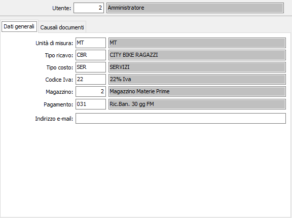
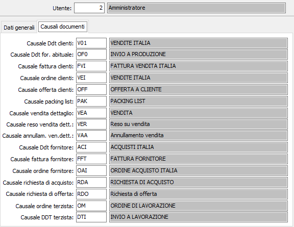

Dati preferenziali utenti
La tabella di configurazione consente di inserire o modificare alcuni dati da utilizzare come proposta nelle varie procedure. Alcuni dei dati elencati sono già presenti sulla Configurazione dati preferenziali, se inseriti per un determinato utente saranno utilizzati questi ultimi che andranno a sostituire per l'utente specificato quelli della configurazione. I dati contenuti sono relativi ai moduli installati; se attivo il modulo eCommerce è possibile specificare l'indirizzo eMail dell'utente, se attivo il modulo del conto lavoro saranno visibili le causali per ordini e DDT terzisti.
La manutenzione si compone di due sezione una relativa ai dati generali e l'altra relativa alle causali dei documenti.
Dati generali

Causali documenti
